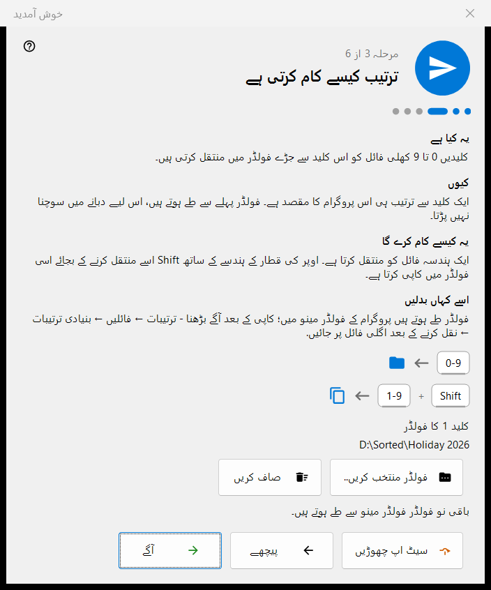
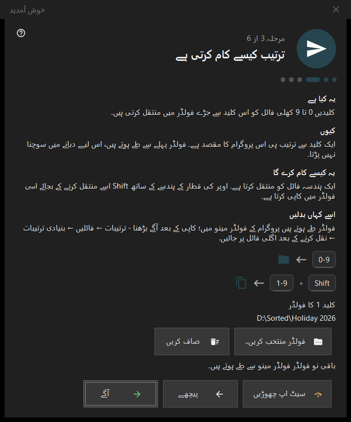

خوش آمدید
خوش آمدید
یہ کس مقصد کے لیے ہے
خوش آمدید کے مراحل چند منٹ میں بنیادی چیزیں ترتیب دیتے ہیں: زبان، ظاہری شکل، کلید 1 کا فولڈر، حذف کرنا اور فائل ایسوسی ایشنز۔ یہ پہلی بار چلانے پر، خالی ویور اسکرین کے ابتدائی سیٹ اپ بٹن سے، اور ترتیبات کے صفحہ عمومی کے خوش آمدید کے مراحل دوبارہ دکھائیں اختیار سے کھلتے ہیں۔ یہ صرف 64 بٹ ورژن میں ہیں۔


اس ترتیب میں
- زبان منتخب کریں۔
- پس منظر کی اسکیم اور وہیل کا عمل منتخب کریں۔
- کلید 1 کے لیے فولڈر منتخب کریں۔
- پڑھیں کہ حذف کرنا کیسے کام کرتا ہے۔
- فائل ایسوسی ایشنز طے کریں۔
- خلاصہ دیکھیں اور ختم دبائیں۔ آگے بٹن آگے بڑھاتا ہے، پیچھے بٹن واپس لاتا ہے، سیٹ اپ چھوڑیں بٹن آخری مرحلے پر پہنچا دیتا ہے۔
عناصر
انٹرفیس کی زبان
ونڈو کی زبان فوراً پیش منظر کے طور پر بدل جاتی ہے؛ پروگرام اسے صرف آگے دبانے پر اپناتا ہے۔ آگے دبائے بغیر ونڈو بند کرنے پر پروگرام کی زبان پہلے جیسی رہتی ہے۔
ظاہری شکل
تصویر والے حصے کی پس منظر اسکیم منتخب کریں (کونے کے حساب سے، سیاہ، سفید، کنارے کے حساب سے، اوپر سے، نیچے سے) اور وہیل کا عمل: یا تو وہ کرسر پر زوم کرتا ہے اور تیر والی کلیدوں سے فائلیں دیکھی جاتی ہیں، یا وہ فائلیں بدلتا ہے اور Ctrl کے ساتھ وہیل زوم کرتا ہے۔ دونوں کو بعد میں ترتیبات کے صفحہ تصاویر پر بدلا جا سکتا ہے۔
ترتیب کیسے کام کرتی ہے
ہندسے 0-9 موجودہ فائل کو ایک فولڈر میں منتقل کرتے ہیں؛ اوپر کی قطار کے ہندسے کے ساتھ Shift اسے کاپی کرتا ہے۔ کلید 1 کا فولڈر فولڈر منتخب کریں.. بٹن سے منتخب کریں؛ باقی نو بعد میں ترتیبات کے صفحہ منزلیں پر طے ہوتے ہیں۔ جو فولڈر غائب ہو جائے اس کی اطلاع یہ پیغام دیتا ہے: یہ فولڈر اب دستیاب نہیں۔ کوئی اور چنیں۔
محفوظ حذف
دکھاتا ہے کہ Del (ری سائیکل بن میں) اور Shift+Del (مستقل طور پر) کیسے کام کرتے ہیں۔ حذف کرنے کے اختیارات ترتیبات کے صفحہ فائلیں پر ہیں۔
تصاویر یہاں کھولیں
اس پروگرام کو فائل ایکسپلورر سے تصاویر اور ویڈیوز کھولنے دیتا ہے۔ یہ مرحلہ صرف تب ظاہر ہوتا ہے جب پروگرام Microsoft Store پیکیج کے طور پر انسٹال نہ ہو؛ یہ آپ کے صارف اکاؤنٹ پر لاگو ہوتا ہے اور اس کے لیے ایڈمنسٹریٹر کی اجازت درکار نہیں۔
سب تیار ہے
خلاصے میں ہر ترتیب، اس کی قدر اور اسے بدلنے کی جگہ درج ہوتی ہے۔ اگر اس پی سی پر سرور اجزا انسٹال ہوں تو اس پی سی پر سرورز بلاک ہر ایک کو اس کی حالت اور مینیجر کھولیں بٹن کے ساتھ دکھاتا ہے؛ کچھ بھی انسٹال نہ ہو تو بلاک چھپا رہتا ہے۔
مرحلے کے حصے
ہر مرحلے کے چار حصے ہیں: یہ کیا ہے، کیوں، یہ کیسے کام کرے گا اور اسے کہاں بدلیں۔